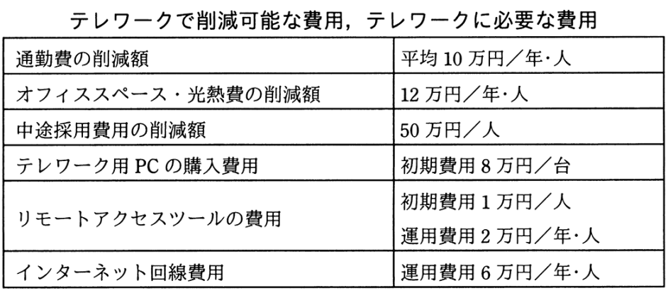

A社は，社員10名を対象に，ICT活用によるテレワークを導入しようとしている。テレワーク導入後5年間の効果（“テレワークで削減可能な費用”から“テレワークに必要な費用”を差し引いた額）の合計は何万円か。
〔テレワークの概要〕
・テレワーク対象者は，リモートアクセスツールを利用して，テレワーク用PCから社内システムにインターネット経由でアクセスして，フルタイムで在宅勤務を行う。
・テレワーク用PCの購入費用，リモートアクセスツールの費用，自宅・会社間のインターネット回線費用は会社が負担する。
・テレワークを導入しない場合は，育児・介護理由によって，毎年1名の離職が発生する。フルタイムの在宅勤務制度を導入した場合は，離職を防止できる。離職が発生した場合は，その補充のために中途採用が必要となる。
・テレワーク対象者分の通勤費とオフィススペース・光熱費が削減できる。
・在宅勤務によって，従来，通勤に要していた時間が削減できるが，その効果は考慮しない。

ア 610
イ 860
ウ 950
エ 1,260